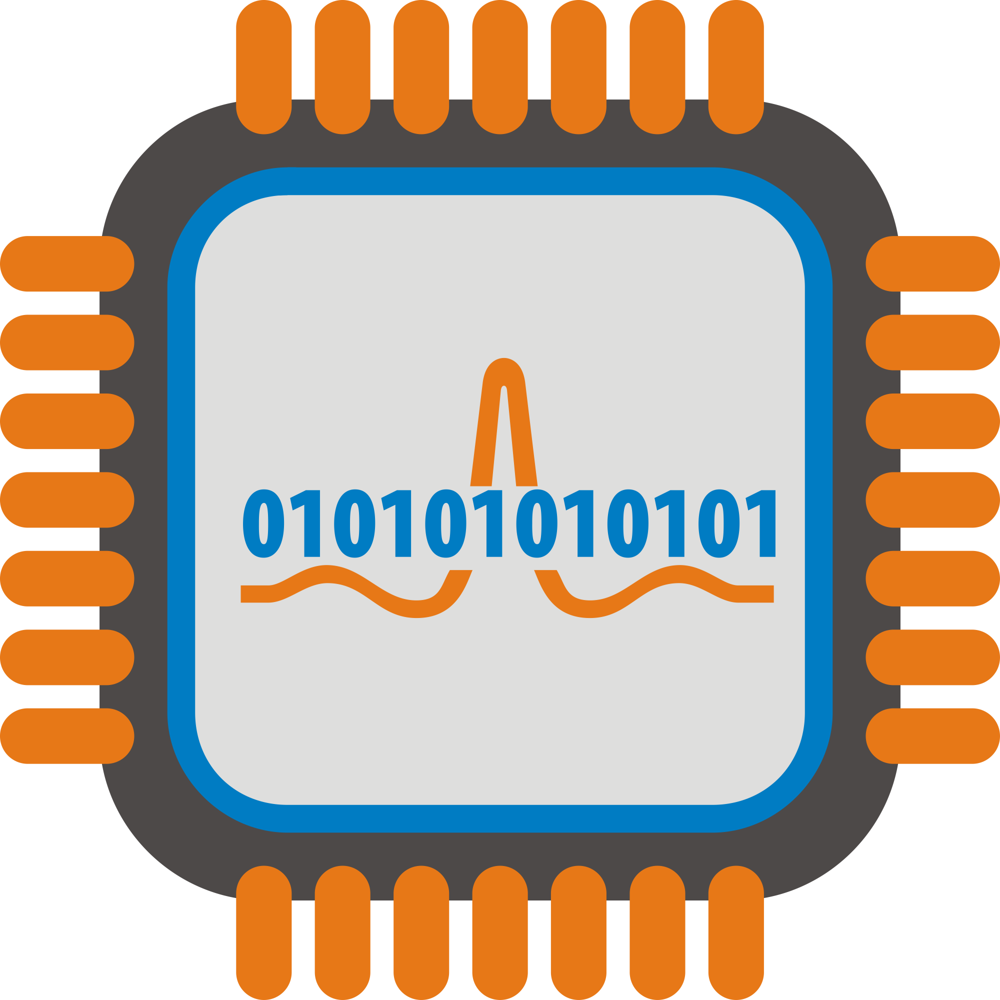

Tucker Apps

Hello, Bonjour, Hola, Privet, Kon'nichiwa, Namaste
Greetings and welcome! I am thrilled to have you visit my programming portfolio. My name is Tucker Schinner, and I am passionate about crafting elegant solutions to complex problems through code.
As a student programmer, I have dedicated countless hours to honing my skills and expanding my knowledge in the world of software development. This portfolio serves as a showcase of the projects I have built, each one a testament to my expertise and creativity in the field.
Within these digital walls, you will find a diverse array of programs and applications that I have developed. From simple utilities to sophisticated web applications, each project demonstrates my proficiency in various programming languages and technologies.
I believe in the power of hands-on experience, and my portfolio reflects my commitment to practical learning. Every line of code, every design decision, and every optimization has been meticulously crafted to showcase not only my technical prowess but also my ability to translate ideas into functional, user-friendly software.
For potential employers, this portfolio is more than just a collection of programs, it's a glimpse into what I can bring to your team. Whether you're seeking a skilled developer to tackle complex challenges or an innovative thinker to drive your projects forward, I am eager to demonstrate how I can contribute to your organization's success.
Thank you for taking the time to explore my programming portfolio. Whether you're here to learn more about my projects, assess my skills, or discuss potential opportunities, I am excited to connect and share my passion for coding with you.
Let's build something amazing together!
Thank You, Tucker Schinner.
Featured Application 
Random Number Generator
Just feed the application a number range and it will pick a number for you. Great for lottery numbers, chores on your to-do-list, even, what to have for dinner. What fun can be had with the random number generator...